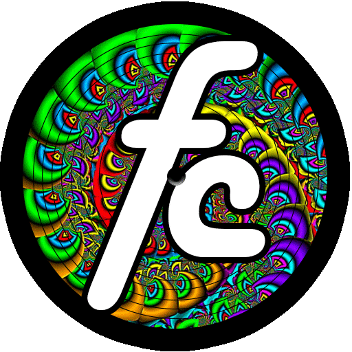

With a bit of JavaScript, it's possible to make a great-looking audio player that updates track names,
accompanying images and track progress. However, these players generally rely on multiple audio files to
load new track data. I wanted an audio player made specifically for DJ mixes, which loads only one long, and
largely opaque audio file.
So I custom built a web audio player designed specifically for DJ mixes. A single audio file can be skipped around as normal, but the tracklisting syncs to the mix timings, rather than audio file data. As the mix plays the listener knows at a glance exactly which song the DJ is spinning! Give it a try:
So I custom built a web audio player designed specifically for DJ mixes. A single audio file can be skipped around as normal, but the tracklisting syncs to the mix timings, rather than audio file data. As the mix plays the listener knows at a glance exactly which song the DJ is spinning! Give it a try:
DJ Mix: Turn On, Tune In, Drop Out (1:14:56)

Playing at:
0:00:00 Copycat - Funkbox Party
0:03:14
Nas ft.
Dougie Fresh & Ludacris - Virgo (Qdup's Virgogo Re-Rub)
0:04:34
The Dixie
Cups - Iko Iko (Qdup's Future Go-Go Edit)
0:05:09
Rita Marley
- One Draw (Father Funk Mix)
0:08:03 J-Sound - I
Scream Sound
0:10:05 The
Niceguys - Stand Up
0:12:20 Kool & The
Gang - Let's Go Dancin' (Shaka Loves You Booty)
0:14:57
Slynk -
Boomin’ (DCDJ Calypso Mix)
0:17:23
Pete
Rock & C.L
Smooth - T.R.O.Y (Father Funk Booty)
0:21.04 Featurecast
- My Thing
0:23:06
Steppenwolf - Magic Carpet Ride (Shaka Loves You Booty)
0:26:12 Father Funk
- Jungle Strut
0:27:43 James
Brown
- Payback (B-Side Booty)
0:29:16 The
Niceguys - Yonder
0:31:56 DJ
Marky
&
XRS - The Way (Featurecast Mix)
0:34:38 Public
Enemy - Harder Than You Think (Featurecast Booty)
0:37:47 C2C - Happy
(J-Sound Remix)
0:41:14 Joss
Stone -
Put Your Hands On Me (Beat Fatigue Mix)
0:45:59 The Great Flood
Catastrophe - Fallen Love (Kill Paris Mix)
0:48:45 Shaka Loves
You - Flip The Funk
0:51:19 Father Funk
- Don't Stop
0:52:09
Nirvana -
Smells Like Teen Spirit (Phibes Booty)
0:55:09 B-Side &
Detta - Rock 'Em Right
0:56:42
The
Commmitments - Mustang Sally (Bezwun Booty)
0:59:58 The Niceguys
- Funky Bird
1:03:00 Bobby C Sound
TV - Papa Grande
1:04:50 Rockwell - I
Need U (Featurecast & WBBL Mix)
1:08:35 Father Funk
- Party Rocker
1:10:22
Chris
Malinchak - So Good To Me (Chamber Mix)